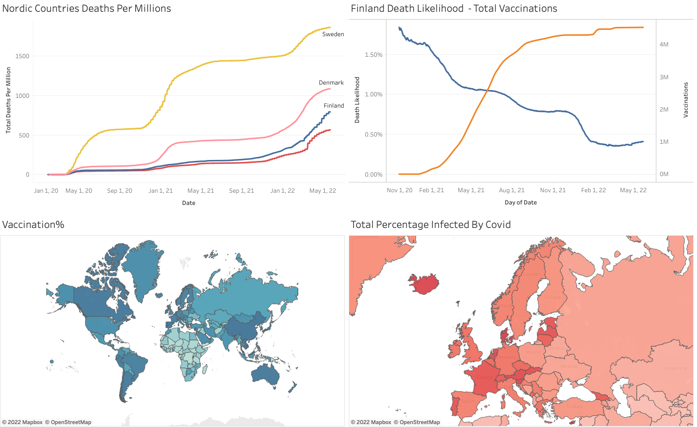

Covid-19 Project
Analyzation of data on Covid-19 accessed from ourworldindata. I utilized SQL to run queries in order to access diffrent metrics to visualize in a Tableau Dashboard.

SQL queries were run in SQLite
Queries
-- Comparison of covid deaths per million in the Nordic countries
SELECT date ,location, total_deaths, total_deaths_per_million FROM 'owid-covid-data'
WHERE location = 'Finland'
OR location ='Sweden'
OR location ='Norway'
OR location ='Denmark';
-- Percentage infected by country
SELECT location, total_cases, population, max(total_cases )/ population * 100 AS percentage_infected FROM 'owid-covid-data'
WHERE continent is not NULL
GROUP BY location
ORDER BY percentage_infected DESC;
-- Comparison of deaths per million and HDI
SELECT location, human_development_index, max(CAST(total_deaths_per_million AS INT)) AS deaths_per_million FROM 'owid-covid-data'
WHERE continent IS NOT NULL
GROUP BY location, human_development_index
ORDER BY deaths_per_million DESC;
-- Death Likelihood vs vaccinations
SELECT date, (total_deaths/total_cases*100) AS death_likelihood,
sum(CAST( new_people_vaccinated_smoothed AS INT) ) OVER (PARTITION BY location ORDER BY location, date) FROM 'owid-covid-data'
WHERE location ='Finland';
-- Percent vaccinated
SELECT location, max(CAST(people_fully_vaccinated_per_hundred AS INT)) FROM 'owid-covid-data'
GROUP BY location
ORDER BY 2 DESC;